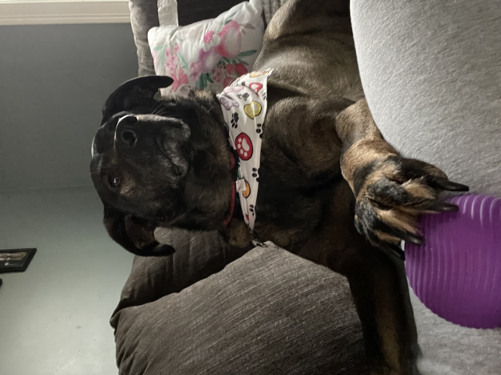
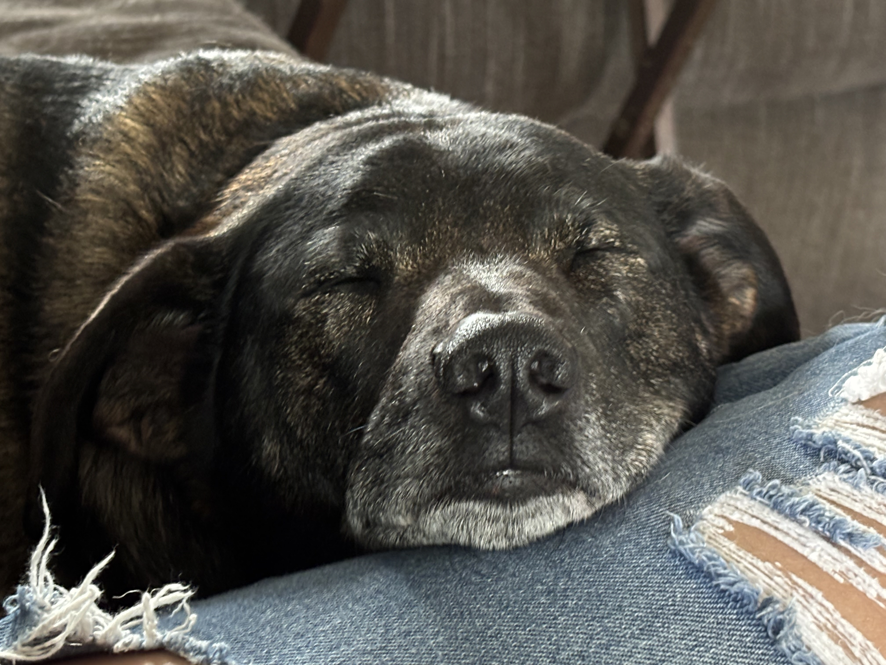
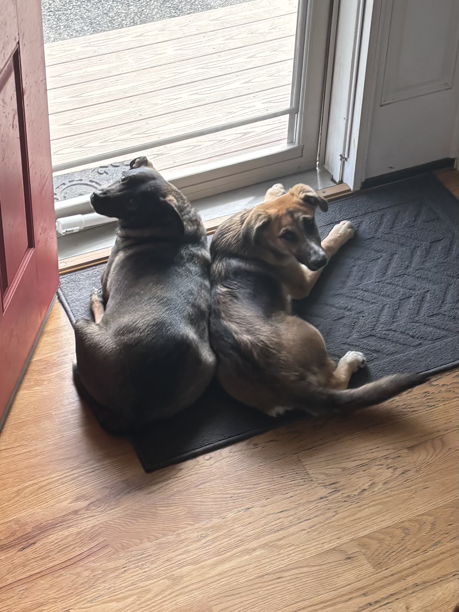

How To Build Confidence & Reduce Anxiety In Fearful and Anxious Dogs
Join Uncle Stonnie as he works with a shy Golden Retriever and demonstrates how to
build confidence and reduce anxiety in fearful and anxious dogs.

Providing appropriate toys is one of the most effective ways to help an anxious dog feel more secure and mentally engaged. Interactive toys, chew toys, and puzzle feeders can redirect nervous energy into focused activity, which helps reduce stress and prevent destructive behaviors. Toys that encourage problem-solving or release treats gradually are especially useful, as they keep the dog occupied while building confidence through independent play. It is important to choose toys that are safe, durable, and suited to the dog’s size and chewing strength, ensuring that playtime remains both calming and constructive.

Rest and relaxation are equally important for managing canine anxiety. Many anxious dogs benefit from having a consistent, quiet space where they can retreat when feeling overwhelmed. This might include a crate, bed, or designated corner of the home that feels safe and predictable. Encouraging regular naps throughout the day helps regulate energy levels and prevents overstimulation, which can often worsen anxious behaviors. Soft bedding, calming sounds, and minimal disturbances can all contribute to a more restful environment where the dog can fully relax and recover.

Social interaction with other dogs can also play a positive role in reducing anxiety, provided it is introduced carefully and at a comfortable pace. Well-matched canine companions can help anxious dogs learn appropriate social behaviors and gain confidence through positive experiences. Controlled introductions in neutral environments, such as on-leash walks or supervised playdates, are often the safest way to begin. However, it is important to respect each dog’s boundaries—forcing interaction can increase stress rather than reduce it. When done thoughtfully, socialization can help anxious dogs feel more secure and connected in their environment.